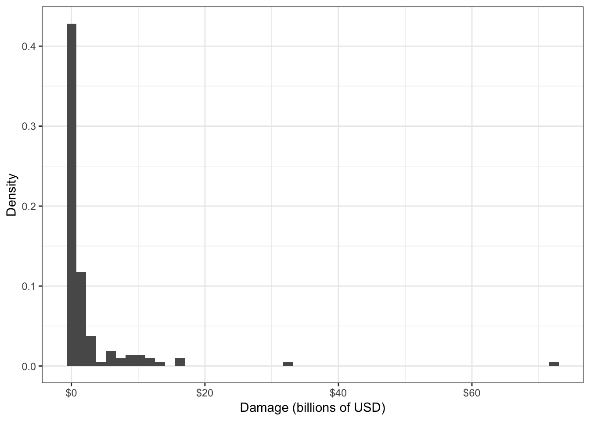

Chapter 6 Parametric Families of Distributions
Caution: in a highly developmental stage! See Section 1.1.
Concepts:
- Common scales: Positive ratio scale, binary, (0,1)
- Different data generating processes give rise to various parametric families of distributions. We’ll explain a good chunk of them.
- These are useful in data analysis because they narrow down the things that need to be estimated. Improving estimator quality by parametric distributional assumptions and MLE
6.1 Parametric Families of Distributions
What is meant by “family”? This means that there are more than one of them, and that a specific distribution from the family can be characterized the family’s parameters. This is what is meant by “parametric” – the distribution can be distilled down to a set of parameters.
For example, to identify a Gaussian distribution, we need to know the mean and variance. Note that some families are characterized by parameters that do not necessarily have an interpretation (or at least an easy one) – for example, to identify a Beta distribution, we need to know the two shape parameters \(\alpha\) and \(\beta\).
Technicality that you can safely skip: It’s not that there are “set” parameters that identify a distribution. For example, although a Beta distribution is identified by the two shape parameters \(\alpha\) and \(\beta\), the distribution can also be uniquely identified by its mean and variance. Or, by two quantiles. In general, we need as many pieces of information as there are parameters. This needs to be done in an identifiable way, however. For example, it’s not enough to identify an Exponential distibution by its skewness, because all Exponential distributions have a skewness of 2! The way in which we identify a distribution from parameters is called the parameterization of the distribution.
6.2 Maximum Likelihood Estimation
In the previous chapter, we estimated parameters like means and probabilities using “sample versions” of these parameters. Usually, these estimators perform well in the univariate setting, but there are some circumstances where they do not. There is a technique called Maximum Likelihood Estimation (MLE) that approximates the data distribution using a parametric family, and if done carefully, allows for significant improvements to estimation.
This chapter first explains what MLE is and how to implement the technique, as well as why and when it would be of use.
6.2.1 How MLE works
Maximum likelihood estimation is a way of estimating parameters by first estimating the data distribution from a specified parametric family. The steps are as follows.
- Make a distributional assumption: Choose a parametric family of distributions that you think is a decent approximation to the data distribution.
- Estimate: From that family, choose the distribution that fits the data “best”.
- Extract: Using the fitted distribution, extract the parameter(s) of interest (such as the mean and/or quantiles).
- Check the assumption: Check that the fitted distribution is a reasonable approximation to the data distribution (not required for estimation, but is good practice).
Let’s look at these steps in turn. As an example, consider the following data set of damages caused by hurricanes, in billions of USD. The distribution of the 144 observations is depicted in the following histogram:
# library(extRemes)
library(tidyverse)## ── Attaching packages ──────────────────────────────────────────────────────────── tidyverse 1.2.1 ──## ✔ ggplot2 3.1.1 ✔ purrr 0.3.2
## ✔ tibble 2.1.3 ✔ dplyr 0.8.3
## ✔ tidyr 0.8.3.9000 ✔ stringr 1.4.0
## ✔ readr 1.1.1 ✔ forcats 0.3.0## Warning: package 'ggplot2' was built under R version 3.5.2## Warning: package 'tibble' was built under R version 3.5.2## Warning: package 'purrr' was built under R version 3.5.2## Warning: package 'dplyr' was built under R version 3.5.2## Warning: package 'stringr' was built under R version 3.5.2## ── Conflicts ─────────────────────────────────────────────────────────────── tidyverse_conflicts() ──
## ✖ dplyr::filter() masks stats::filter()
## ✖ dplyr::lag() masks stats::lag()data(damage, package = "extRemes")
(hurricane_hist <- ggplot(damage, aes(Dam)) +
geom_histogram(aes(y = ..density..), bins = 50) +
theme_bw() +
scale_x_continuous("Damage (billions of USD)",
labels = scales::dollar_format()) +
ylab("Density"))
6.2.1.1 Step 1: Make a distributional assumption
This step requires choosing a family to approximate the data distribution (you can find several families defined in the previous chapter). Here are two general guidelines that may help you choose a distribution family.
- Visually match the variable characteristics and shape of the data distribution to a distribution family.
- If possible, think about the process that “generated” the data, and match that process to the data-generating process defining a family.
Always keep in mind that there is almost never a “correct” choice! Remember, we are making an approximation here, not seeking a “true” distribution family.
Example 1. In the hurricane damages example, the data variable is a positive continuous variable, and has a histogram that appears to decay starting from a damage of zero. The selected distribution should accomodate this – Weibull, Gamma, or GPD can all accomodate this. But the family should allow for heavy-tailed distributions to accomodate the two large data values that we see in the histogram, leaving a GPD as a good candidate. As for the way the data are “generated”, the data are inherently recorded because they are extreme, and this matches the way that a GPD is derived.
Example 2. In the house prices example, the family should also accomodate a positive continuous random variable, should be unimodal with two tails, and be skewed to the right. A Weibull, Lognormal, or Gamma distribution so far seem like good candidates. Since the log of house prices looks like a Gaussian distribution, we choose a Lognormal distribution, since this is how the Lognormal family is defined.
6.2.1.2 Step 2: Estimate
So far, we’ve selected a family of distributions. Now, in this step, we need to select the distribution from this family that best matches the data. This step is the namesake of MLE.
The key is to select the distribution for which the observed data are most likely to have been drawn from. We can do this through a quantity called the likelihood, which can be calculated for any distribution that has a density/pmf, then finding the distribution that has the largest likelihood. Let’s break these two concepts down.
- Likelihood.
The likelihood is a useful way to measure how well a distribution fits the data. To calculate the likelihood, denoted \(\mathcal{L}\), from data \(y_1, \ldots, y_n\) and a distribution with density/pmf \(f\), calculate the product of the densities/pmf’s evaluated at the data: \[\mathcal{L} = \prod_{i=1}^n f(y_i).\]
When \(f\) is a pmf, you can interpret the likelihood as the probability of observing the data under the distribution \(f\). When \(f\) is a density, the interpretation of likelihood is less tangible, and is the probability density of observing the data under the distribution \(f\). These interpretations are exactly true if the data are independent, but are still approximately true if data are “almost” independent. Even with non-independent data, the likelihood is still a useful measurement.
A similar quantity to the likelihood is the negative log likelihood (nllh), defined as \[\ell = -\log\mathcal{L} = -\sum_{i=1}^n \log f(y_i).\] The nllh is numerically more convenient than the likelihood. For example, the likelihood (\(\mathcal{L}\)) tends to be an extremely small number, whereas the nllh typically is not. For instance, 100 draws from a N(0,1) distribution results in a likelihood that’s typically around \(3 \times 10^{-62},\) whereas the nllh is typically around 141.5. Note that minimizing the nllh is the same as maximizing the likelihood.
- Finding the distribution that has the largest likelihood
Remember that each distribution in the distribution family that we selected can be represented by its parameters – for example, the Normal distribution by its mean and variance, or the Beta distribution by \(\alpha\) and \(\beta\). This means that we can view the likelihood as a function of the family’s parameters, and optimize this function! This can sometimes be done using calculus, but is most often done numerically.
We end up with estimates of the distribution’s parameters, which is the same thing as having an estimate of the data’s distribution. Don’t stop here if you are looking to estimate something other than the distibution’s parameters – move on to Step 3.
Example 1. For the hurricane example, first find the GPD shape and scale parameters that maximize the likelihood (or, minimize the nllh).
nllh <- function(parameters) {
scale <- parameters[1]
shape <- parameters[2]
if (scale <= 0) return(Inf)
-sum(evd::dgpd(damage$Dam, scale = scale, shape = shape, log = TRUE))
}
optim_fit <- optim(c(1, 1), nllh)
gpd_scale <- optim_fit$par[1]
gpd_shape <- optim_fit$par[2]Take a look at the GPD density corresponding to these parameters, and compared to the histogram of the data:
hurricane_hist +
stat_function(fun = evd::dgpd, scale = gpd_scale, shape = gpd_shape,
colour = "blue")## Warning: Ignoring unknown parameters: scale, shape
6.2.1.3 Step 3
6.2.1.4 Step 4
either with a sample density/mass function, and/or a QQ-plot.
6.2.2 Motivating Example
Data such as this can help an insurance company with their financial planning. Knowing an upper quantile, such as the 0.8-quantile, would give a sense of the damage caused by the “worst” hurricanes.
Take a look at the sampling distributions of three estimators of the 0.8-quantile: the sample version, the MLE under a Gaussian assumption, and the MLE under a generalized Pareto distribution (GPD) assumption. The sampling distributions are obtained using bootstrapping. The Gaussian-based MLE is an example of a bad MLE that uses a poorly chosen assumption – its sampling distribution is much wider than that of the sample version. On the other hand, the GPD-based MLE is based on a much more realistic assumption, and shows a significant improvement to the sample version – its sampling distribution is much narrower.
# dgpd <- function(x, sig, xi) 1/sig*(1 + xi*(x/sig))^(-1/(xi+1))
# gpd_quantile <- function(x, p = 0.5) {
# fit <- ismev::gpd.fit(x, 0, show = FALSE)
# sigma <- fit$mle[1]
# xi <- fit$mle[2]
# sigma * (p^(-xi) - 1) / xi
# }
# wei_quantile <- function(x, p = 0.5) {
# nllh <- function(par) -sum(dweibull(x, par[1], par[2], log = TRUE))
# par_hat <- optim(c(1,1), nllh)$par
# qweibull(p, par_hat[1], par_hat[2])
# }
# sampling_dist <- damage %>%
# bootstraps(times = 1000) %>%
# pull(splits) %>%
# map(as_tibble) %>%
# map_df(~ summarise(
# .x,
# bar = quantile(Dam, probs = 0.8),
# mle_gpd = gpd_quantile(Dam, 0.8),
# mle_gau = qnorm(0.8, mean = mean(Dam), sd = sd(Dam)))
# )
# sampling_dist %>%
# gather(key = "method", value = "estimate") %>%
# ggplot(aes(estimate)) +
# facet_wrap(~method, nrow = 1, scales = "free_x") +
# geom_histogram(bins = 30) +
# theme_bw() Caution: A common misconception is that the two large observations in the dataset are outliers, and therefore should be removed. However, doing so would bias our understanding of hurricance damages, since these “outliers” are real occurences.
In other cases, an MLE does not result in much of an improvement at all.
Although there are far fewer cases in the univariate case compared to the regression setting where MLE gives a dramatic improvement to estimation, it’s still worth discussing when it’s most useful in the univariate setting and to ground concepts.
High quantile example for a PI:
# N <- 10000
# rate <- 1
# ordered <- numeric(0)
# mle <- numeric(0)
# for (i in 1:N) {
# x <- rexp(10, rate = rate)
# ordered[i] <- quantile(x, probs = 0.975, type = 1)
# mle[i] <- qexp(0.975, rate = 1/mean(x))
# }
# tibble(ordered, mle) %>%
# gather(value = "estimate") %>%
# ggplot(aes(estimate)) +
# geom_density(aes(group = key, fill = key), alpha = 0.5) +
# geom_vline(xintercept = qexp(0.975, rate = rate),
# linetype = "dashed") +
# theme_bw()
# sd(ordered)
# sd(mle)In both cases, the sampling distribution of the MLE is better than that of the sample version – that is, more narrow and (sometimes) centered closer to the true value.
Is there a better estimator than the MLE? It turns out that the MLE is realistically the best that we can do – as long as the distributional assumption is not too bad of an approximation. If you’re curious to learn more, the end of this chapter fleshes this out using precise terminology.
If the improvement by using MLE does not seem very impressive to you, you’d be right – at least in the univariate world. To see much difference between the MLE and sample version estimators, you’d need to be estimating low-probability events with a small amount of data. In fact, estimating the mean using MLE most often results in the same estimator as the sample mean! Don’t write off the MLE just yet – it really shines in the regression setting, where it has even more benefits than just improved estimation. Tune in to Part II to learn more.
As an example of (1), suppose you are measuring the ratio of torso height to body height. Since your sample falls between 0 and 1, and probably does not have a weirdly shaped density, a Beta distribution would be a good assumption, since the Beta family spans non-weird densities over (0, 1). However, not knowing the data-generating process, you would not be able to justify the distribution completely (and that’s OK). As an example of (2), perhaps you are operating the port of Vancouver, BC, and based on your experience, know that vessels arrive more-or-less independently at some average rate. This is how a Poisson distribution is defined. Not only that, but the data appear to be shaped like a Poisson distribution. Then it would be justifiable to assume the data follow a Poisson distribution.
# n <- 50
# N <- 1000
# fit_mle <- numeric(0)
# fit_ls <- numeric(0)
# for (i in 1:N) {
# x <- rnorm(n)
# mu <- 1/(1+exp(-x))
# y <- rbinom(n, size = 1, prob = mu)
# fit_mle[i] <- glm(y ~ x, family = "binomial")$coefficients[2]
# ls <- function(par) sum((y - 1/(1+exp(-par[1]-par[2]*x)))^2)
# fit_ls[i] <- optim(c(0,1), ls)$par[2]
# }
# tibble(fit_mle, fit_ls) %>%
# gather(value = "beta") %>%
# ggplot(aes(beta)) +
# # scale_x_log10() +
# geom_density(aes(group = key, fill = key), alpha = 0.5)
# sd(fit_mle)
# sd(fit_ls)
# IQR(fit_mle)
# IQR(fit_ls)
# ## More extremes show up with LS (at least with n=50):
# sort(fit_ls) %>% tail(10)
# sort(fit_mle) %>% tail(10)
# ## Gaussian assumption
# ## - LS not even that good at n=100 -- bowed down. MLE is good.
# ## - MLE qqplot with n=50 looks about the same as LS with n=100
# ## - LS at n=50 is heavy tailed (seemingly).
# qqnorm(fit_mle)
# qqnorm(fit_ls)For n=50, check out an example that results in an extreme beta:
# n <- 50
# beta <- 0
# while (beta < 300) {
# x <- rnorm(n)
# mu <- 1/(1+exp(-x))
# y <- rbinom(n, size = 1, prob = mu)
# ls <- function(par) sum((y - 1/(1+exp(-par[1]-par[2]*x)))^2)
# .optim <- optim(c(0,1), ls)
# beta <- .optim$par[2]
# alpha <- .optim$par[1]
# }
# if (.optim$convergence == 0) stop("optim didn't successfully converge.")
# mle <- glm(y ~ x, family = "binomial")$coefficients
# qplot(x, y) +
# stat_function(fun = function(x) 1/(1+exp(-alpha-beta*x)), mapping = aes(colour = "LS")) +
# stat_function(fun = function(x) 1/(1+exp(-mle[1]-mle[2]*x)), mapping = aes(colour = "MLE"))# # MLE is still slightly narrower, even for a Beta(2,2) distribution (which is
# # symmetric and bell-like) -- for n=5 and n=50. Both close to Gaussian, even at
# # n=5 (as expected).
# shape1 <- 2
# shape2 <- 2
# foo <- function(x) dbeta(x, shape1, shape2)
# curve(foo, 0, 1)
# n <- 5
# N <- 1000
# xbar <- numeric(0)
# mle <- numeric(0)
# for (i in 1:N) {
# x <- rbeta(n, shape1, shape2)
# xbar[i] <- mean(x)
# nllh <- function(par) {
# if (min(par) <= 0) return(Inf)
# -sum(dbeta(x, par[1], par[2], log = TRUE))
# }
# .optim <- optim(c(shape1, shape2), nllh)
# par_hat <- .optim$par
# mle[i] <- par_hat[1] / sum(par_hat)
# }
# plot(mle - xbar) # The estimates aren't the same.
# tibble(mle, xbar) %>%
# gather() %>%
# ggplot(aes(value)) +
# geom_density(aes(group = key, fill = key), alpha = 0.5)
# sd(mle)
# sd(xbar)
# qqnorm(mle)
# qqnorm(xbar)# # Univariate MLE *especially* important for heavy tailed distributions!
# nu <- 1.5
# n <- 5
# N <- 1000
# xbar <- numeric(0)
# mle <- numeric(0)
# for (i in 1:N) {
# x <- rt(n, df = nu)
# xbar[i] <- mean(x)
# nllh <- function(par) -sum(dt(x, df = par[1], ncp = par[2], log = TRUE))
# .optim <- optim(c(nu, 0), nllh)
# mle[i] <- .optim$par[2]
# }
# plot(mle - xbar) # The estimates aren't the same.
# tibble(mle, xbar) %>%
# gather() %>%
# ggplot(aes(value)) +
# geom_density(aes(group = key, fill = key), alpha = 0.5)
# sd(mle)
# sd(xbar)
# qqnorm(mle)
# qqnorm(xbar)